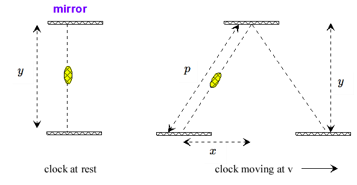

Deriving Special Relativity with Geometry: Time Dilation
10 Mar 2018
Special relativity is one of those concepts many people think requires advanced knowledge of mathematics and physics to
understand. After all, it's what made Einstein famous. How could one of us understand his work? In fact you only need
some algebra and geometry along with some basic physics to derive it. Begin with the following assumptions:
1. The speed of light `c` is constant to all observers regardless of the reference frame they are in. This means light moves
at speed `c` for someone who stands still as well as someone who is on a moving car no matter the speed.
2. The laws of physics are the same on any reference frame. A ball thrown in the air will behave in the same way when thrown
inside a moving car or when thrown outside. Because of this an observer cannot distinguish whether they are in a moving
reference frame or not i.e. whether they are in a moving car with no windows or a still room with no windows.
From both postulates and some basic physics one can formulate the special theory of relativity. To do so let's consider a thought
experiment. Imagine you are standing by the street while your friend drives a car passing by you. You want to compare your time
to his time. To do so both of you will use a special kind of clock. This special clock, instead of being digital or using the usual
hands, consists of a beam of light bouncing up and down between two mirrors. The time it takes for the beam to travel distance `y`
(distance between mirrors) is one unit of time `t_1`. The distance can be determined by multipliying time with the speed
of light resulting in `y=ct_1`. For this thought experiment we will assume `t_1` is measured by your friend in the car. When
you were standing still relative to the clock (on the car with your friend), the beam just bounced up and down. But when observing your friend's clock from the
sidewalk, the beam doesn't just move vertically. It also moves horizontally. The combined movement makes the beam move diagonally
tracing am isoceles triangle with the road as the base.

The beam travels distance `p` diagonally while the car moves distance `x` horizontally. The maximum height of the beam is still `y`.
By the Pythagorean theorem the distances can be related through the equation `p^2=y^2+x^2`. Since distance is simply speed times time
we can replace the distance variables with their corresponding velocities and times. For the vertical distance we get `y=ct_1`, the
speed of light times the unit of time it takes to travel (from the perspective of the car).
The diagonal distance is `p=ct_2` because it takes `t_2` time (as measured from your perspective outside the car) for the beam to travel
between both mirrors once at speed `c`.
The horizontal distance is `x=vt_2` since the car moves at velocity `v` for `t_2` units of time.
Plugging in for each variable results in `(ct_2)^2=(ct_1)^2+(vt_2)^2`. As we can see there exist two different variables for
time. The first variable `t_1` represents standard time measured without movement relative to the clock while `t_2` is time measured from an outside
perspective i.e. seeing the clock move. Within time `t_2` the car moves distance `x` and the beam of light travels the length of the hypotenuse `p` hence why both
have the same variable for time. Solving for `t_1` results in
`(ct_1)^2+(vt_2)^2=(ct_2)^2`
`(ct_1)^2=(ct_2)^2-(vt_2)^2`
`ct_1=sqrt((ct_2)^2-(vt_2)^2)`
`t_1=frac(sqrt((ct_2)^2-(vt_2)^2))(c)`
`t_1=frac(sqrt(t_2^2(c^2-v^2)))(c)`
`t_1=frac(t_2sqrt(c^2-v^2))(c)`
`=t_2sqrt(frac(c^2-v^2)(c^2))`
`=t_2sqrt(1-frac(v^2)(c^2))`
`=t_2gamma, gamma=sqrt(1-frac(v^2)(c^2))`
So one unit of time on a moving clock is not the same length as one unit of time on a stationary clock. Depending on where you see
the clock the time will vary. As it turns out from the equation above, `t_1` is smaller than `t_2`. This can only happen if your
friend experiences less time inside the moving car than you do standing outside. If your friend experiences less time then it means
his time flows slower than your time. Hence time is relative to where you are either outside or inside the car.